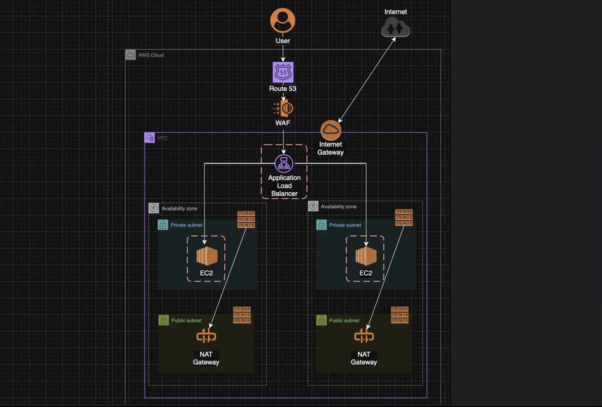

Arquitetura AWS Enterprise-Grade com Segurança em Camadas

Desenhei uma arquitetura AWS completa seguindo as melhores práticas de segurança e escalabilidade enterprise-grade. A arquitetura utiliza uma abordagem de segurança em camadas, onde cada componente é isolado e protegido, garantindo que mesmo em caso de comprometimento de uma camada, as demais permaneçam seguras.
- Route 53: Gerenciamento de DNS e roteamento global
- AWS WAF: Primeira linha de defesa contra ataques web
- Application Load Balancer: Distribuição de tráfego em subnets públicas
- EC2 Instances: Servidores em subnets privadas (não acessíveis da internet)
- NAT Gateway: Atualizações seguras para instâncias privadas
- Security Groups: Controle granular de acesso e tráfego
A segurança em camadas é crucial para ambientes enterprise. Se um atacante tentar invadir, ele só consegue chegar até o load balancer, enquanto os servidores ficam completamente protegidos em subnets privadas. Esta abordagem garante isolamento completo e conformidade com padrões de segurança corporativos.
como funciona
Tecnologias e Serviços AWSSegurança em Camadas
Implementação de múltiplas camadas de segurança: WAF como primeira linha de defesa, ALB em subnets públicas, e servidores em subnets privadas isoladas.
Isolamento de Rede
VPC com subnets públicas e privadas, NAT Gateway para atualizações seguras, e Security Groups para controle granular de acesso.
Alta Disponibilidade
Arquitetura distribuída em múltiplas AZs com Application Load Balancer para distribuição de carga e Auto Scaling para escalabilidade automática.
Conformidade
Arquitetura alinhada com padrões de segurança enterprise, incluindo isolamento de recursos, controle de acesso granular e monitoramento de segurança.
Escalabilidade
Auto Scaling Groups para escalabilidade automática baseada em demanda, com distribuição de carga inteligente via Application Load Balancer.
Monitoramento
Monitoramento contínuo de segurança e performance, com alertas configurados para eventos críticos e métricas de rede.
- Alta disponibilidade: Múltiplas AZs para redundância
- Segurança enterprise-grade: Múltiplas camadas de proteção
- Escalabilidade automática: Adaptação automática à demanda
- Isolamento completo: VPC com subnets segregadas
- Conformidade: Padrões de segurança corporativos
Não basta ter uma aplicação funcionando, é preciso arquitetar pensando em segurança desde o início. A segurança em camadas não é um luxo, é uma necessidade para ambientes enterprise.
Vídeos e Tutoriais:
- AWS Networking Basics For Programmers | Hands On
- Create a Scalable AWS VPC with Auto Scaling & Load Balancer: Hands-On Learning
- Application Load Balancers
- Enable internet access for a VPC using an internet gateway
- Uma arquitetura de Nuvem AWS para hospedagem na Web
- Load balancer subnets and routing
- AWS for Beginners – What is Application Load Balancer and How it Works: Part 19
Educação e Formação:
- Pós-graduação em Arquitetura de Soluções - XP Educação
- Professor: Rafael Amaral - Especialista em Segurança e Redes